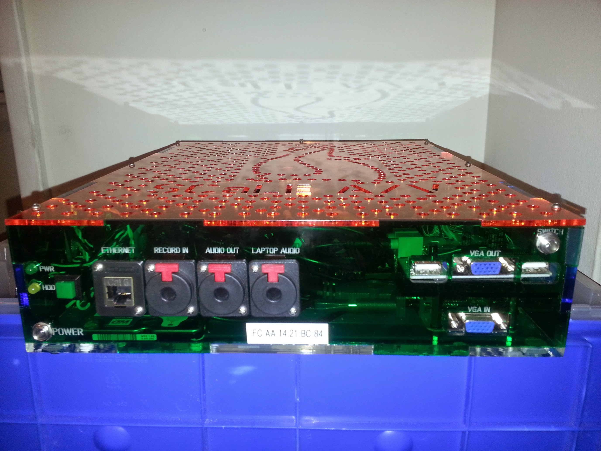

Podium Computer Setup

Connections from left to right.
-
- Power LED
- Top (Labeled PWR) Should come on automatically when plugged in.
- HDD LED
- Middle (Labeled HDD)
- 12v DC power connector
- Bottom (Labeled POWER)
-
- Power Button
- Green Square, Push if power light is not on (check if momentary push will cause safe shutdown?)
-
- Ethernet Connector
- Should be connected to A/V network, The link light is blue and activity light orange can be seen through top Example
-
- RECORD IN
- 13x used for backup audio recording, 14x will be used for room audio feed(Waiting on details from Tom.)
-
- AUDIO OUT
- Unbalanced line out this should will connect to room's sound system.
-
- LAPTOP AUDIO
- Unbalanced Line in, Comes from speaker laptop usually bundled with vga cable.
-
- USB Connector
- Normally Unused.
-
- VGA OUT
- Top, This should be connected to room's Projector.
- VGA IN
- Bottom, This should be connected to speaker's laptop.
-
- USB Connector
- Normally Unused.
-
- Video Switch
- Labeled "SWITCH", this can be used to control if internal video out(room slides) or speaker's laptop is out put to VGA OUT, normally this switch should be taped to top of lecturn.